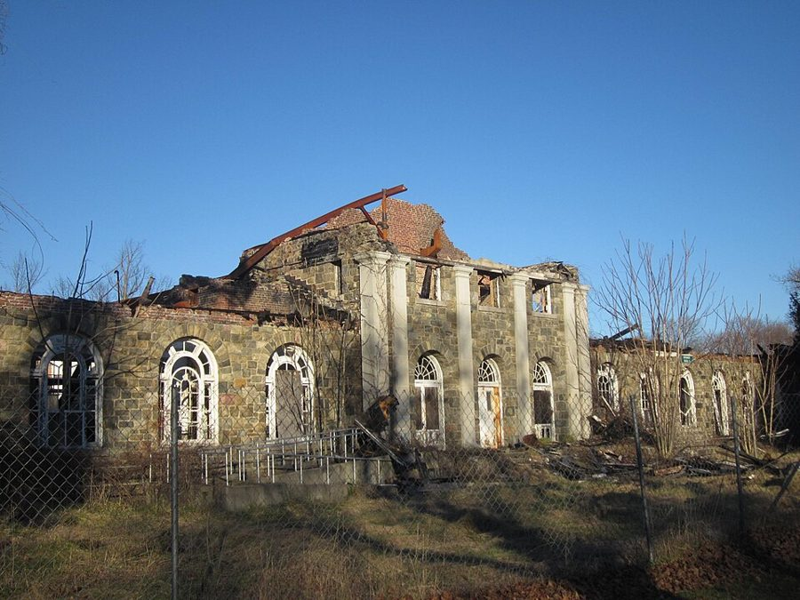
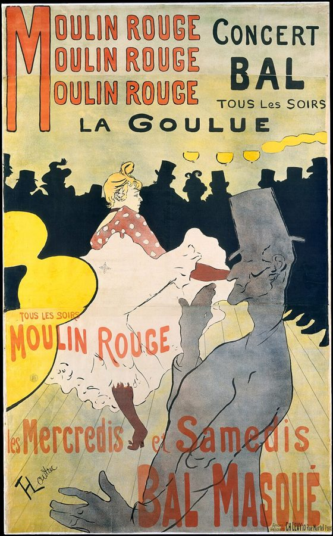

读之前
这一页是报告 16 的前段：7 月 14 日到 31 日，六条。上一页查理从 Nemur 那里听说了实验失败以后对他的安排，要求先去看看那个地方；第一条写的就是这次参观，占了全页一半。后面几条短，回到实验室、他的公寓和 Algernon 身边。读的时候抓两条线：一条是他在别人身上看见的自己；一条是他把时间和心思分给了谁。
手术后四个多月，智力远远超过身边的人。6 月他带着 Algernon 从芝加哥的大会上出走，在 43 街和第十大道租了公寓，和对门的画家 Fay 走到一起，夜里跳舞喝酒；和 Alice 之间总隔着「旧查理」。Algernon 开始失控，他把它送回实验室，基金会让他独立研究。上一页他得知：实验失败的话，他会被送去 Warren 州立之家。
读的时候带着这几个问题。不用先找答案，读完回来对照「检查一下理解」。
在 Warren，查理见到的人都在讲自己的工作。留意他从谁身上想到了自己，又从哪里开始想象自己住在这里。§1
留意查理在 Warren 笑的那两次：他在笑什么，别人以为他在笑什么？§1
查理怎么分辨他对 Alice 和对 Fay 的感情？他拿什么当尺子？§3
§2、§4、§5 里都有 Algernon。留意它的样子，和查理看它时说到自己的那几句。§2 §4 §5
分节地图
这一页有六条带日期的报告。读完一条打个勾；每条下面的英文是那一条开头的几个词，在 Kindle 里搜它就能跳过去。没读的那几行先模糊着，免得提前看到情节，点一下就能看清。全页约 5300 词，一次读完。
7 月 14 日约 2600 词 It was a bad day to … 全页一半的篇幅。留意他看着每个人时想到了谁，和他想象自己在这里的样子。 7 月 15 日约 300 词 I’ve been putting off a visit … 只有四段。留意他看 Algernon 时身体的反应，和他怎么说 Fay。 7 月 16 日约 1000 词 Alice met Fay last night. I’d … 留意两人见面时查理在做什么，和回家路上 Alice 问的那几句。 7 月 27 日约 600 词 Working around the clock. Over Fay’s … 后半段文字忽然变了样。留意是从哪一句起，说话的又是谁。 7 月 28 日约 500 词 Fay has a new boy friend. … 留意他在迷宫边上看 Algernon 时，做了什么、没做什么。 7 月 31 日约 300 词 I’m on the edge of it. … 只有三段。留意他用来形容此刻的那些词。
背景：书里默认你知道的事
按在书里出现的顺序排，标题前是节号。人名后面括号里是中译本的译名，读者想对照译本时用。
§1 Warren 和真实的州立机构Warren 州立之家是书里虚构的。这类机构在当时有多少、住了多少人，Willowbrook 是怎么回事，报告 1、7 的页面讲过。不少州立机构建在乡下，院区里散布着一栋栋住宿楼，加上医院、学校、农场。参观的人看到的未必是全貌。1965 年圣诞前后，教育学者 Burton Blatt 和摄影师 Fred Kaplan 把一台小相机藏在腰带上，进了美国东部四个州的五所州立机构，偷拍了病区深处的「后院病房」（back wards），1966 年出版成摄影集《炼狱里的圣诞节》（Christmas in Purgatory）。书里没有提到这件事。

纽约州 Rockland 县的 Letchworth Village，一所 1911 年开办、1996 年关闭的州立机构。这是 2011 年拍的一栋已经废弃的楼，不是当年的样子。书里没有提到它。Doug Kerr，CC BY-SA 2.0，维基共享资源 §1 在 Warren 遇见的人下面这些人都是这一页第一次出场，只写身份。
Winslow（Ray） 温斯洛 Warren 的主管心理师（head psychologist），年轻，高瘦，一脸疲惫。他的名字 Ray 是从别人跟他打招呼时知道的。
Thelma 特尔玛 一栋男生宿舍楼里管一层楼的女人。
Jerry、Dusty 杰瑞、达斯提 住在那栋楼里的两个男孩。
木工老师、校长 工场老师、校长 Warren 学校里的两个人，书里没有给名字。
§1 院里的分类和用词Winslow 和校长说的是当时机构里的话。moron 那一套分级和 Goddard，报告 10、12 的页面有说明；high-moron 指这一级里能力较高的人。retardate（智障者）、custodial care（只管吃住和看护的照料）也是当时的正式用语，今天都不用了。tidy、untidy 书里没有解释，从 Thelma 和校长的话看，分的是能不能照顾自己的身体，包括大小便，不是在说人整不整洁、品行好不好。
§1 罗特列克画里的舞女图卢兹-罗特列克（Henri de Toulouse-Lautrec，1864–1901）是法国画家，常画巴黎蒙马特的歌舞厅、舞女和夜里的娱乐场所，给红磨坊（Moulin Rouge）画的海报最有名。查理说，Thelma 的神情和高高盘在头顶的发髻，让她像罗特列克画里的舞女。书里没说是哪一幅、哪一位。

罗特列克 1891 年给红磨坊画的海报，上面印着舞女 La Goulue 的名字。只是他画舞女的一个例子，书里没说 Thelma 像哪一位。Henri de Toulouse-Lautrec，CC0，维基共享资源 §1 木工班的学生：当时怎么说木工老师说，他的学生是 deaf mutes（聋哑人）。这是当时常见的说法，美国聋人的团体反对它：美国聋人协会（National Association of the Deaf）很早就公开反对 deaf-mute、deaf and dumb 这类词。理由是聋人的发声器官多半正常，不说口语是因为听不见、没学会，他们用手语、读唇来交流，并不「哑」。今天直接说 deaf（聋人）。书里说这些学生是联邦政府资助的一项专门研究的对象，那是小说里的事。
§5 书里的迷宫书里的迷宫隔板可以挪动，每次换一种走法，叫 shifting maze：老鼠不能靠背熟一条路，每次都得现场找路。它从铁丝网顶上的活门被放进去，沿着通道跑到奖赏箱（reward box）就有吃的；走进死胡同（cul-de-sac），会被轻轻电一下，告诉它走错了。最简单的 T 形迷宫和目标箱，见报告 13 后半的页面。下面是本站画的示意图，不是书里那座迷宫的样子。
入口：铁丝网顶上的活门
岔口
死胡同·电击
奖赏箱
有吃的
可挪动的隔板：挪开，底下这条路就通了
走对的路
走错的岔路
隔板
本站示意图：一座可以挪动隔板的迷宫，入口、岔口、死胡同、奖赏箱。隔板一挪，对的路和错的路就换了位置。 §5 catatonic stupor 和「像蜡一样」catatonic stupor 是精神医学的词，译作紧张性木僵：人一动不动，对周围几乎没有反应。紧张症（catatonia）还有两种相关的表现：别人把他的胳膊摆成什么姿势，他就一直那样撑着（僵住，catalepsy）；摆动时能感到一种均匀的轻微阻力，像在弯一根蜡（蜡样屈曲，waxy flexibility）。美国精神医学学会的 DSM-5 把这几样都列为紧张症的特征。§5 里查理拿它打比方，原文是 much like（很像）。
词与短语
三类：紫边的「查理拼的」是他拼错的词，先写还原的拼法；黄边的「每个字都认识」是熟词生义、俚语、别人话里的弦外之音；其余是这里用法特别的词。斜体小字是原句里的几个词，在 Kindle 里搜它就能找到原文，拼错的照拼错的抄。
§1 7 月 14 日
kid oneself
… perhaps I’m kidding myself and it …
自己骗自己
kid 作动词是「开玩笑、哄人」，kid oneself 是哄自己。他先把心情低落推给阴雨天，接着说真正让他不安的也许是另一件事。
bear to the right
… Turn left and bear to your right.”
（顺着路）往右偏着走
bear 在指路时是「朝某个方向偏着走」，不是「忍受」。译本：「然后左转，停在你的右侧」。bear 没有「停」的意思，是左转之后再往右偏着开。
cottage
… two-story brick buildings he called cottages where …
（机构里的）住宿楼
cottage 本义是乡间小屋。这里指两层的砖砌宿舍楼，查理把这个词用斜体标出来，表示这是 Winslow 的叫法。
on the outside
… made some satisfactory adjustment on the outside.
在（机构）外面的社会里
the outside 是监狱、收容机构里的说法，指围墙外的世界。上一页查理自己也说，他一直能在 outside 自己过活。
high-moron
… leave are all high-moron types …
（当时分级里）能力较高的那一档
当时的分级用词，见「背景」。译本：「有办法离开的都是那些低智能者」。high 说的是这一级里能力较高的人，所以他们才走得出去；「低」字把这层意思丢了。
custodial care
… who require constant custodial care—but …
看护性照料
只管吃住和安全，不以治疗、训练为目标。Winslow 说现在收进来的，需要这种照料的越来越多。
wine-colored birthmark
… covered by a large, wine-colored birthmark.
酒红色的胎记
医学上叫葡萄酒色斑（port-wine stain），一种天生的毛细血管畸形，大约每一百到三百个新生儿里有一个，多长在头颈部，不会自己褪掉。
company
… “Didn’t expect any company today, Ray,” she …
来客
company 在这里不是「公司」，是「客人、作伴的人」。Winslow 的名字 Ray 就是从这句话里知道的。
turn the mattresses
… but Wednesday we turn the mattresses.
翻床垫
Thelma 的玩笑：她接着说星期四来，这里的味道好闻得多。Winslow 平常星期四带客人来，原因就在这一句里。
keep to
… she kept to my left so that …
一直待在（某一边）
keep to 是「一直靠着某一边、不离开」。她为什么这样，查理在同一句里说了。
tidy / untidy
… a lot better than the untidy cottages.
能自理的 / 不能自理的（院里的分类）
日常意思是「整齐 / 邋遢」，这里是院里的行话，见「背景」。译本：「分成干净和肮脏两类」。字面不错，可院里这对词分的是能不能照顾自己，「肮脏」听起来像在评判人。
quite a thing
… “Quite a thing,” I said, nodding …
真不简单，真让人感慨
quite a + 名词，表示「少见的、了不起的」，口气可赞可叹。查理是冲着那个大男孩和小男孩说的。
retardate
… “Emotionally disturbed retardates. When there’s a …
（当时的说法）智障者
retardate 是当时机构和学术文章里的名词，今天不用了。emotionally disturbed（情绪失常的）也是当时的说法。
buy the place
… He’s thinking of buying the place.”
打算把这儿买下来（玩笑）
Winslow 介绍查理时开的玩笑。木工老师马上接了下去。
b-buys
… “Well, if he b-buys it, …
buys 买（口吃）
不是查理拼错，是他照着声音记下木工老师的口吃。后面的 g-got、w-wood、D-deaf 都是这样。
mouth the words
… I nodded, mouthing the words exaggeratedly, …
把口型做得很夸张
mouth 作动词，是用嘴形把话「说」出来，让人看口型。对着听不见的孩子，查理把口型做得很大。译本：「说些夸张的赞语」。原文夸张的是口型，不是赞美的话。
feel hollow
… needed it, but I felt hollow.
心里发空
hollow 本义是「空心的」。话是为那孩子说的，他自己心里是空的。
in a menial capacity
… or in a menial capacity in factories …
干粗活、打下手
capacity 在这里是「身份、职位」，menial 是「卑下的、伺候人的」。
beyond help
… “No one is beyond help.”
没救了
beyond 是「超出……的范围」。上一句校长用了这个说法，查理把它原样顶了回去。
give away a part of oneself
… to give away a part of themselves …
把自己的一部分给出去（付出时间和感情）
give away 是「送掉、白给」。查理当场就问了这是什么意思，Winslow 的回答在后面两三段。
resignation
… a sense of resignation. There had been …
认命，听天由命
resignation 常见的意思是「辞职」，这里是「不再挣扎、接受下来」。
§2 7 月 15 日
general motivation
… any more; general motivation has decreased.
总体的动机（做任务的劲头）
实验心理学的说法：动物肯不肯为奖励去完成任务。查理用的是实验记录的口气。
identify with
… I’ve got to stop identifying with him.
把自己代入（对方）
identify 常见的意思是「认出、鉴定」；identify with 是心理上把自己和对方看成一样。
gag
… I started to gag and choke, …
作呕，干呕
报告 9 的页面里 gag 是「整人的玩笑」，这里是动词「要吐」。
make the rounds
… called Fay and we made the rounds.
一家接一家地转（酒吧、夜总会）
round 是「一圈」。不是「四处散步」，是去好几个地方喝酒玩乐。
can’t be bothered
… She just can’t be bothered, and …
懒得费这个心
字面是「不能被打扰」，意思是「不愿花这个力气」。查理说的是 Fay 对他的工作。
§3 7 月 16 日
crash the party
… “Crashing the party,” she said. “Brought …
不请自来
crash 是「闯」，crash a party 指没被邀请就闯进聚会。Fay 说的，下半句是「自带酒水」。
size up
… seconds of sizing each other up, they …
打量，掂量（对方）
size 是「尺寸」，size up 是看一眼就估一估对方是什么样的人。
for all they cared
… and for all they cared I could …
他们才不管（我在不在）
for all someone cares 表示「某人根本不在乎」。查理半开玩笑地说自己被晾在一边。
nudist colony
… nudist colonies were the answer to …
天体营
一群人不穿衣服一起生活、晒太阳的营地或社区。colony 在这里不是「殖民地」，是「聚居的一群人」。
poison someone against
… won’t have him poisoning you against me.
挑拨（某人）反对我
poison A against B 是「让 A 对 B 起反感」；I won’t have 是「我不容许」。查理认定是 Burt 把他喝酒的事告诉了 Alice。
I’ve heard that one before
… “I’ve heard that one before.”
这话我早听过了
接在「我喝酒自己有数」之后：这种保证她听得多了。查理的回答是「可没从我嘴里听过」。
been around
… a woman who’s been around as she …
见过世面，经历多
字面是「到处去过」。说人时指阅历多，说女人时常暗含男女之事上有经验。
let the air out of
… that really lets the air out of me.
让我泄了气
像给气球放气。Alice 本来憋着一股劲来的，这句接在她说完自己原先的打算之后。
be up to
… “Are you up to this one? You’re …
对付得了，胜任
be up to something 是「有能力应付」。this one 接着 Alice 上一句说的那个只有他自己能解决的 problem。
handy
… well it was just handy, that’s all.
方便，顺手
handy 常说工具「好用」。查理用它形容他和 Fay：住在对门，就近。
§4 7 月 27 日
around the clock
… Working around the clock. Over Fay’s …
日夜不停
时钟转一整圈，就是一天一夜。
cot
… had a cot moved into the lab.
行军床，折叠床
窄的、能搬来搬去的简易床。
the calculus of intelligence
… The calculus of intelligence is a fascinating …
智力的演算
calculus 本义是微积分，也泛指一套推算的方法（报告 11 后半的页面里说过的「变分法」calculus of variations 就是数学的一支）。查理是说，要用数学去推算智力的变化。
taffy
… time and space were taffy being stretched …
太妃糖（拉的那种软糖）
美国的 taffy 做的时候要反复拉长、折叠，所以接着有 stretched and looped and twisted 这个比方。
pass wind
… Urinating, defecating, passing wind, staring at me …
放屁
委婉的说法，wind 是「气」。
chip-a-zee
… I want to pet the chip-a-zee.
chimpanzee 黑猩猩
不是三十多岁的查理拼错，是这段里那个孩子说错了：前面几句刚说过 That’s a chimpanzee。和报告 9 页面里的 valentime 一样，是孩子的说法。译本：「我要摸黑猩猩」。孩子的口误没有译出来。
the man’ll holler
… No, the man’ll holler. That sign …
那个人会嚷的
holler 是美国口语「大声嚷」，the man 指看管的人。这几句一问一答，书里没交代答话的是谁。
dressed in spring
… sunshiny people are dressed in spring.
穿着春天的衣服
这一条写在 7 月 27 日。
lie in one’s own dirt
… Algernon lies in his own dirt, unmoving, …
躺在自己的排泄物里
dirt 在这里不是泥土。
§5 7 月 28 日
shifting maze
… he will run a shifting maze, …
可变迷宫
隔板能挪动、走法会变的迷宫，见「背景」。
reward box
… along the pathways to the reward box.
奖赏箱
迷宫的终点，放着食物。报告 13 后半页面里的 goal box（目标箱）是同一类东西。
double back
… start, pause, double back, turn around …
往回折
double 作动词，这里是「掉头、原路折回」。
cul-de-sac
… finally he was in the cul-de-sac …
死胡同
法语借词，字面是「袋子底」。前一段的 dead-end、blind alley 是同一个意思。
phonograph needle
… squeaking like a phonograph needle scratched across …
唱机的唱针
唱针横着划过唱片的纹路，会发出一声刺耳的嘎吱声。
catatonic stupor
… much like a catatonic stupor.
紧张性木僵
见「背景」。下一句的 stayed like wax 也是。
one jot
… if it adds even one jot of …
一丁点
jot 是「极少的一点」，常和 not one、even one 连用。
§6 7 月 31 日
on the edge of it
… I’m on the edge of it. I …
就差一步了
on the edge of 是「就在……的边上」，it 指他在找的答案。
kill oneself
… think I’m killing myself at this pace, …
拼命干，要把自己累垮
口语里 killing yourself 常指干得太拼命，at this pace 是「照这个速度」。
all rolled into one
… and truth all rolled into one.
合在一起，集于一身
roll into one 字面是「揉成一团」。
查理的文字
这一页六条，拼错的词都是 0，看得出变化的是句子。7 月 16 日那条平均每句 9.8 词，全页最短：大半是他和 Alice 一来一回的对话。7 月 27 日长词占 6.1%，全页最高，前半段写知觉，用了不少 sensation、illuminated、proportion 这样的词。
同一条的后半段，文字一下子换了样：半截的句子，一串省略号，猴子的 chee … cheee 用了斜体，句子短得像孩子在说话。「能喂它花生吗？……不行」，一问一答没有引号，也不说是谁在答。查理前一段刚写他分不清哪些是记忆、哪些是眼前，接着文字本身就分不清了。7 月 28 日、31 日两条，平均句长升到 15 词左右，是全页最长的。
7 月 27 日开头搬进行军床、「智力的演算」那几句，1959 年的中篇里也有，几乎一样；中篇里「在几星期里塞进一辈子的研究」是 Nemur 说的，长篇里成了查理自己的话。
记忆拼图
查理的童年是一段一段想起来的。每段一张卡片：想起了什么，是被眼前的什么勾起来的。年纪是从书里推的，推不出来的写「年纪不详」。读过的页的卡片会汇总到记忆拼图 ，按年纪排好。
动物园的猴子和黑猩猩 像是小时候在动物园：猴子在笼子里蹦，想抓另一只的尾巴。他问能不能喂花生，回答是不行，看管的人会嚷；想摸黑猩猩，又说不行，去看大象吧。答话的是谁，书里没说。是睡在实验室时，动物的气味勾起来的。
§4
现在 实验室
分不清
回忆 动物园
气味和颜色
笼子里的猴子
花生、黑猩猩
春天的人群
Algernon
§4 · 7 月 27 日后半，五段
本站示意图：7 月 27 日这一条的后半段，从实验室滑进回忆，又回到实验室里的 Algernon。猴子和人群算现在还是回忆，是本站的读法，书里没有分界。 值得停下来的句子
It upset me ... because he reminded me of Charlie.— §1，7 月 14 日，刚进 Warren，看见拖拉机后面的年轻人。本站译：这让我心里不安……因为他让我想起了查理。
查理用第三人称叫从前的自己，报告 9 里 4 月 13 日那段回忆就开始了。这里不是回忆，是一个陌生人：没刮胡子，帽檐孩子气地拉低，在后视镜里还好奇地望着他。本站的读法：这是书里那个「在看的查理」又一次出现，前面有报告 11 公园里那个男孩、报告 14 窗外那张脸；这一次是查理先移开了眼睛。
I may soon be coming to Warren, to spend the rest of my life with the others ... waiting.— §1，7 月 14 日，开车离开 Warren 以后，这一条的最后一句。本站译：也许不久我就会来 Warren，和其他人一起过完余生……等着。
waiting 前面是省略号，后面是句号，没说等什么。Winslow 说过，候补名单上的一千四百人在家里等一个空位，住进来的人通常就一直住下去。查理把自己放进了这两种等待里。译本：「以便和其他人共度余生……等着吧」。多了一个「吧」，读起来像在说走着瞧，成了冲着谁说的话；原文只是一个分词，写的是那种日子的样子。
读完想一想
1. Warren 的人对住在那里的人都很用心：Thelma 说这些孩子一辈子都需要她，Winslow 冲查理发火，说很少有人肯付出时间和感情。查理离开时却觉得那里没有人谈希望，像「活着的死亡」。这两个印象能同时成立吗？
本站的看法 本站的看法：能。查理两样都写了：他想知道这些人是怎么走到这里来的，觉得他们和抱着小男孩的 Jerry 一样，在把自己的一部分给出去；他也写下没有人提康复、治好、送回外面。照顾得用不用心，和这个地方是为了让人回到世界上还是让人留下，是两个问题。他最后还问了一句：没给我看的那些呢？那几年确实有人带着藏起来的相机去拍参观看不到的病房（见「背景」）。
2. 查理在出租车上对 Alice 说，只有和她在一起时，他心里的旧查理才会惊慌；和 Fay 不会，所以他知道 Fay 不重要。拿「害怕」来量「在乎」，你觉得站得住吗？
本站的看法 本站的看法：对查理来说，这把尺子大概是他眼下最靠得住的：头脑什么都能解释，只有那阵惊慌不听他的。可它也把事情说得太省事。他自己在前面写过，没把自己的秘密告诉 Fay，就等于没把自己全交给她；Fay 不让旧查理害怕，也可能和这有关。Alice 听完的反应是：这很讽刺。那天夜里的最后一句，也是一个答案。
3. 7 月 28 日，Algernon 在岔口拐错了，查理看得出接下来会怎样，想伸手把它拿出来，又忍住了，只是看着。做研究的人该这样吗？换了你呢？
本站的看法 本站的看法：照实验的规矩，他得看：他要找的正是 Algernon 为什么退化，伸手就看不到了。可两周前他刚说过，一定得停止把自己和它看成一样，这一页里他每次看它，还是会想到自己。忍住不伸手的这个人，也知道自己可能走进同一条死胡同。他给自己定的目标是：找出规律，哪怕只多一丁点知识，也就够了。
对照今天
成立 后来的事实印证了这个说法部分成立 一部分对，一部分被后来的事改了被改写 后来的事实推翻了它，或者完全变了样书里的说法：哪儿都没有空位，候补的人只能在家里等（Winslow，§1）
书里 Winslow 说 Warren 的候补名单有一千四百人，到年底也许只空出二三十个名额；这些人在家里等这里或别处的空位，因为住进来的人通常一住就是一辈子。
当时 美国州立机构里的智障者 1967 年前后最多，此后一路减少，数字见报告 7 页面的「对照今天」。
今天 大型机构大多关了，「等」却还在，等的东西变了：等的是在自己家里或社区里接受照护的名额。美国各州 Medicaid 的居家和社区服务（HCBS）有等候名单，KFF 统计 2024 年合计 71 万多人，多数是智力或发育障碍者；2023 年平均要等 36 个月。KFF 也提醒，各州名单的口径不一样，多数州登记前不先审核资格，这个数字不能直接当成没人照管的人数。核对于 2026-10。依据：KFF 关于 Medicaid 居家和社区服务等候名单的报告（2016–2023、2016–2024 两版）。
书里的说法：智商六七十的孩子，越来越多由城里学校的特殊班或社区来照管（Warren 的校长，§1）
书里 校长说，智商高一些的孩子 Warren 已经不太收得到了：六七十分的越来越多进了城里学校的特殊班，或者由社区的机构照管。
当时 美国教育部的回顾说，1970 年美国学校只教育了五分之一的残障儿童，不少州有法律允许学校不收聋、盲、有情绪障碍或智力障碍的孩子。
今天 1975 年美国国会通过《全体残障儿童教育法》（Public Law 94-142，1990 年改名 IDEA），要求公立学校给残障孩子免费、适当的教育。2022–23 学年，按这部法律接受服务的 3–21 岁学生有 750 万人，占公立学校学生的 15%。校长看到的方向后来写进了法律；进了学校以后在普通班还是特殊班上课，至今还在讨论。核对于 2026-10。依据：美国教育部「A History of the Individuals with Disabilities Education Act」，美国国家教育统计中心（NCES）Fast Facts。
检查一下理解
先在心里答，再点开。答错的那题，回书里把对应那一条再读一遍。
1.（§1）Warren 有围墙吗？有人自己走出去，院方怎么办？ 没有围墙，只有门口的大门和挡住看热闹的人的树篱。Winslow 说管不住，也不去追：惹了麻烦，镇上的人会告诉他们，或者警察送回来；没有消息，就当他们在外面过得下去。
2.（§1）查理在 Warren 想象自己是这里的人时，想到了哪些画面？ 在新校舍里，他想象自己站在排队进教室的人中间，推轮椅、牵着别人的手，或者抱着一个小男孩；在校长面前，他想自己会被分进 tidy 还是 untidy。
3.（§1）Winslow 为什么突然结束了谈话？ 他说起要把成年人抱在怀里用奶瓶喂，还要担着被尿屎弄脏的风险，骂查理待在研究的象牙塔里什么都不懂。查理忍不住笑了，Winslow 误会了，站起来结束了谈话。查理想：等他知道了全部的事，会明白的。
4.（§1）查理以前在 Warren 住过吗？ 报告 7 里唐纳先生说，Herman 死后母亲把查理送进了 Warren，是他让机构放查理出来做工；报告 11 里他又说，查理一晚上也没在那里住过。上一页查理自己也说，唐纳马上把他弄了出来。这一条里他没有写自己记得那里。
5.（§3）Alice 那天晚上为什么来找查理？她担心的是什么？ 她从 Burt 那里知道了 Algernon 的事，仍觉得当初鼓励查理做手术，自己有责任。她担心他喝酒，担心 Fay 带着他喝酒跳舞、耽误工作，说这件事只有他自己能解决。
6.（§4）「I want to pet the chip-a-zee」是谁在说话？ 回忆里小时候的查理：睡在实验室，动物的气味把他带回了动物园，他把 chimpanzee 说成了 chip-a-zee。这几句没有引号，也没说明是回忆，紧接着又回到实验室里的 Algernon。
用一句话说这一页：
精彩回顾
隔几周回来，先看这几张卡片。想不起来的那张，点节号回到这一页，再回书里那一条。
一句话： 看过 Warren 以后，查理把自己关进实验室，在 Algernon 身上找自己的答案。
后视镜里的年轻人 拖拉机后面戴水手帽的年轻人一直望着他，车开走了还在后视镜里望。查理先移开了眼睛：那人让他想起了查理。
§1 星期三翻床垫 管一层楼的 Thelma 脸上有酒红色的胎记，总走在查理左边。三百个男孩，五个人看；她说星期四来，这里好闻得多。
§1 第二层架子上的灯座 听不见的男孩指着自己做的灯座：摇摇晃晃，漆刷得不匀。查理夸了，夸完心里发空；男孩临走碰了碰他的胳膊。
§1 书架上的空奶瓶 Winslow 说，肯把一个大人抱在怀里用奶瓶喂的人没几个。查理笑了，他误会了，起身结束了谈话。
§1 出租车上 Alice 本来是来恨 Fay 的，见了面却喜欢她。查理说：只有对 Alice，旧查理才会惊慌。
§3 死胡同里的小球 Algernon 在岔口拐错，转圈、撞墙，最后缩成一个小球，身子摆成什么样就是什么样。查理忍住没伸手。
§5